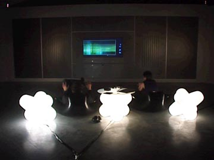

|
Audioroom The window into the ouside world functions as the screen to the inside of home entertainment. Animating arial shots of Manchster alternate with with scenes from AudioRom 'Shift Control'. Furniture Design from Marc Newson and Euro Lounge. Co-commissioned by FACT and The Museum of Science and Industry back |
 |